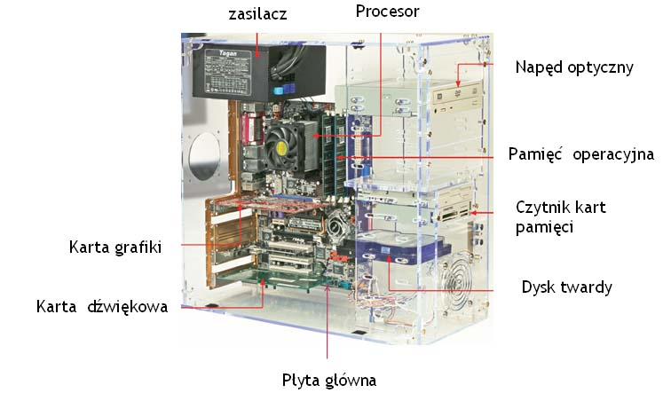

Jednostka centralna (jednostka systemowa) to podstawowa część zestawu komputerowego, zawierająca najważniejsze elementy składowe komputera. Mieści się w zamkniętej obudowie, do której podłączane są podstawowe urządzenia: monitor, klawiatura i mysz.
